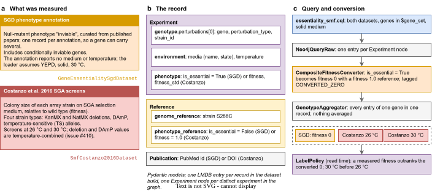
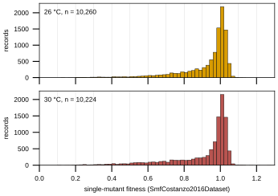
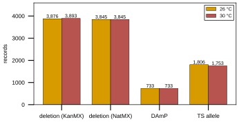

Gene essentiality and single-mutant fitness
Two datasets describe what happens to S. cerevisiae when one gene is perturbed. GeneEssentialitySgdDataset records the genes whose null mutant the Saccharomyces Genome Database (SGD) annotates as inviable. SmfCostanzo2016Dataset records single-mutant fitness (SMF), the colony size of a mutant strain relative to wild type, for the array strains of the Costanzo et al. 2016 synthetic genetic array (SGA) screens. The two meet in one supported query, where each essential gene becomes a fitness of 0 beside the fitness Costanzo measured for the same gene.
Terms used below:
DAmP: decreased abundance by mRNA perturbation, a hypomorphic allele of an essential gene made by disrupting its 3’ untranslated region.
entry: one experiment and its reference, as the query returns it.
fitness: colony size of a mutant relative to wild type; 1.0 is wild-type growth.
KanMX, NatMX deletion: a gene replaced by a kanamycin or nourseothricin resistance marker; the two deletion collections of the SGA array.
processed record: every entry of one gene set, grouped by
GenotypeAggregator.source key: the screen an entry came from (
costanzo2016@26,costanzo2016@30,converted_zero), astorchcell.data.label_policy.source_keynames it.TS allele: a temperature-sensitive allele of an essential gene.
What the experiments measured


Fig. 1 a, the two sources: SGD null-mutant “inviable” annotations, and the Costanzo et al. 2016 SGA colony-size screens at 26 °C and 30 °C over four strain types. b, the stored record, an experiment (genotype, environment, phenotype), its reference (genome and reference phenotype) and the publication. c, the supported query and the conversion that turns an essential gene into a fitness-0 entry, the aggregation that keeps every entry of a gene in one record, and the read-time label policy. Diagram: notes/assets/drawio/showcase-essentiality-smf.drawio, composed from the loaders and the converter, not redrawn from a published figure.
The records
One record of each dataset as its loader stored it, re-validated through the pydantic class and printed from model_dump(). The dumps are cut to the named fields; each cut is marked with the number of fields it hides.
Gene essentiality (SGD)
Record 0 of data/torchcell/gene_essentiality_sgd/processed/lmdb, produced by
def read_records(processed_dir: str) -> list[dict[str, Any]]:
"""Every record of a built ExperimentDataset, interned pointers resolved.
Mirrors ``ExperimentDataset.get_single_item``: pickled records from ``lmdb``, the
sibling ``interned`` env (when present) loaded once, ``resolve_interned`` splicing
each ``$ref`` back. A store with no ``interned`` env is a legacy inline store.
"""
interned: dict[str, Any] = {}
interned_dir = osp.join(processed_dir, "interned")
if osp.isdir(interned_dir):
env = lmdb.open(interned_dir, readonly=True, lock=False)
with env.begin() as txn:
for key, value in txn.cursor():
interned[key.decode()] = pickle.loads(value)
env.close()
env = lmdb.open(osp.join(processed_dir, "lmdb"), readonly=True, lock=False)
records: list[dict[str, Any]] = []
with env.begin() as txn:
n = txn.stat()["entries"]
for idx in range(n):
raw = txn.get(f"{idx}".encode())
assert raw is not None, f"missing key {idx} in {processed_dir}"
records.append(resolve_interned(pickle.loads(raw), interned))
env.close()
return records
def dump_record(record: dict[str, Any], keep: tuple[str, ...]) -> str:
"""Debugger-style tree of a stored record, cut to the dotted paths in ``keep``.
The experiment and reference are re-validated through the pydantic classes the
dataset stored them as (``EXPERIMENT_TYPE_MAP`` / ``EXPERIMENT_REFERENCE_TYPE_MAP``)
and dumped with ``model_dump()``; the publication dict is used as stored. At every
level, the number of fields cut is printed as a comment.
"""
experiment = EXPERIMENT_TYPE_MAP[record["experiment"]["experiment_type"]](
**record["experiment"]
)
reference = EXPERIMENT_REFERENCE_TYPE_MAP[
record["reference"]["experiment_reference_type"]
](**record["reference"])
full = {
"experiment": experiment.model_dump(),
"reference": reference.model_dump(),
"publication": record["publication"],
}
kept: dict[str, Any] = {}
for path in keep:
node = kept
for part in path.split("."):
node = node.setdefault(part, {})
node["__leaf__"] = _pick(full, path)
return "\n".join(_render(kept, full, 0))
records = read_records(osp.join(DATA_ROOT, 'data/torchcell/gene_essentiality_sgd', 'processed'))
print(dump_record(records[0], keep=ESSENTIALITY_FIELDS))
experiment:
experiment_type = 'gene essentiality'
dataset_name = 'GeneEssentialitySgdDataset'
genotype:
perturbations[0]:
systematic_gene_name = 'YAL001C'
perturbed_gene_name = 'TFC3'
perturbation_type = 'sga_kanmx_deletion'
strain_id = 'S288C'
# ... 9 other field(s) cut
environment:
media:
name = 'YEPD'
state = 'solid'
# ... 5 other field(s) cut
temperature:
value = 30.0
# ... 1 other field(s) cut
# ... 5 other field(s) cut
phenotype:
graph_level = 'node'
label_name = 'is_essential'
is_essential = True
# ... 2 other field(s) cut
reference:
experiment_reference_type = 'gene essentiality'
genome_reference:
strain = 'S288C'
# ... 2 other field(s) cut
phenotype_reference:
is_essential = False
# ... 4 other field(s) cut
# ... 2 other field(s) cut
publication:
pubmed_id = '12140549'
# ... 3 other field(s) cut
Single-mutant fitness (Costanzo 2016)
Record 10263 of data/torchcell/smf_costanzo2016/processed/lmdb, produced by
def read_records(processed_dir: str) -> list[dict[str, Any]]:
"""Every record of a built ExperimentDataset, interned pointers resolved.
Mirrors ``ExperimentDataset.get_single_item``: pickled records from ``lmdb``, the
sibling ``interned`` env (when present) loaded once, ``resolve_interned`` splicing
each ``$ref`` back. A store with no ``interned`` env is a legacy inline store.
"""
interned: dict[str, Any] = {}
interned_dir = osp.join(processed_dir, "interned")
if osp.isdir(interned_dir):
env = lmdb.open(interned_dir, readonly=True, lock=False)
with env.begin() as txn:
for key, value in txn.cursor():
interned[key.decode()] = pickle.loads(value)
env.close()
env = lmdb.open(osp.join(processed_dir, "lmdb"), readonly=True, lock=False)
records: list[dict[str, Any]] = []
with env.begin() as txn:
n = txn.stat()["entries"]
for idx in range(n):
raw = txn.get(f"{idx}".encode())
assert raw is not None, f"missing key {idx} in {processed_dir}"
records.append(resolve_interned(pickle.loads(raw), interned))
env.close()
return records
def dump_record(record: dict[str, Any], keep: tuple[str, ...]) -> str:
"""Debugger-style tree of a stored record, cut to the dotted paths in ``keep``.
The experiment and reference are re-validated through the pydantic classes the
dataset stored them as (``EXPERIMENT_TYPE_MAP`` / ``EXPERIMENT_REFERENCE_TYPE_MAP``)
and dumped with ``model_dump()``; the publication dict is used as stored. At every
level, the number of fields cut is printed as a comment.
"""
experiment = EXPERIMENT_TYPE_MAP[record["experiment"]["experiment_type"]](
**record["experiment"]
)
reference = EXPERIMENT_REFERENCE_TYPE_MAP[
record["reference"]["experiment_reference_type"]
](**record["reference"])
full = {
"experiment": experiment.model_dump(),
"reference": reference.model_dump(),
"publication": record["publication"],
}
kept: dict[str, Any] = {}
for path in keep:
node = kept
for part in path.split("."):
node = node.setdefault(part, {})
node["__leaf__"] = _pick(full, path)
return "\n".join(_render(kept, full, 0))
records = read_records(osp.join(DATA_ROOT, 'data/torchcell/smf_costanzo2016', 'processed'))
print(dump_record(records[10263], keep=SMF_FIELDS))
experiment:
experiment_type = 'fitness'
dataset_name = 'SmfCostanzo2016Dataset'
genotype:
perturbations[0]:
systematic_gene_name = 'YAL002W'
perturbed_gene_name = 'vps8'
perturbation_type = 'sga_kanmx_deletion'
strain_id = 'YAL002W_dma23'
# ... 9 other field(s) cut
environment:
media:
name = 'SGA double-mutant selection (SD-MSG, -His/Arg/Lys, +canavanine/thialysine/G418/clonNAT)'
state = 'solid'
# ... 5 other field(s) cut
temperature:
value = 30.0
# ... 1 other field(s) cut
# ... 5 other field(s) cut
phenotype:
graph_level = 'global'
label_name = 'fitness'
fitness = 0.764
fitness_std = 0.0773
fitness_uncertainty_type = 'bootstrap_se'
n_samples = 17
sample_unit = 'screen'
# ... 4 other field(s) cut
reference:
experiment_reference_type = 'fitness'
genome_reference:
strain = 'S288C'
# ... 2 other field(s) cut
phenotype_reference:
fitness = 1.0
fitness_std = 0.06460868710876369
# ... 9 other field(s) cut
# ... 2 other field(s) cut
publication:
doi = '10.1126/science.aaf1420'
# ... 3 other field(s) cut
The data
Counts and distributions over the two dataset stores. Where a table names one temperature it is 30 °C; the Caveats section says why.
Counts per dataset
dataset |
records |
unique genes |
detail |
|---|---|---|---|
|
1,329 |
1,140 |
1,329 records with |
|
20,484 |
5,493 |
10,260 records at 26 °C; 10,224 records at 30 °C; 10,277 distinct strain ids |
SMF records by strain type and temperature
strain type ( |
26 °C |
30 °C |
both |
|---|---|---|---|
deletion (KanMX) ( |
3,876 |
3,893 |
7,769 |
deletion (NatMX) ( |
3,845 |
3,845 |
7,690 |
DAmP ( |
733 |
733 |
1,466 |
TS allele ( |
1,806 |
1,753 |
3,559 |
Issue #410 twins: of 10,277 distinct strain ids, 8,454 carry a 26 °C and a 30 °C record with byte-identical fitness and fitness_std (DAmP: 733, deletion (KanMX): 3,876, deletion (NatMX): 3,845), 1,753 carry two records that differ (TS allele: 1,753), and 70 appear at one temperature only.
SMF fitness distribution (phenotype.fitness)
subset |
n |
min |
q1 |
median |
mean |
q3 |
max |
|---|---|---|---|---|---|---|---|
all records |
20,484 |
0.1137 |
0.8845 |
0.9878 |
0.9205 |
1.0143 |
1.2774 |
26 °C |
10,260 |
0.1279 |
0.9000 |
0.9882 |
0.9299 |
1.0145 |
1.1399 |
30 °C |
10,224 |
0.1137 |
0.8664 |
0.9875 |
0.9110 |
1.0143 |
1.2774 |
deletion (KanMX), 30 °C |
3,893 |
0.2265 |
0.9665 |
1.0008 |
0.9709 |
1.0195 |
1.1118 |
deletion (NatMX), 30 °C |
3,845 |
0.1770 |
0.9410 |
0.9968 |
0.9381 |
1.0177 |
1.0915 |
DAmP, 30 °C |
733 |
0.3370 |
0.9290 |
0.9820 |
0.9388 |
1.0085 |
1.0660 |
TS allele, 30 °C |
1,753 |
0.1137 |
0.5771 |
0.7238 |
0.7068 |
0.8466 |
1.2774 |
SGD essential genes in the Costanzo SMF table
1,140 genes carry an SGD inviable record; 907 of them have at least one SmfCostanzo2016Dataset record and 233 have none. The 4,903 SMF records of those genes, by strain type, at 30 °C:
strain type |
records (30 °C) |
genes |
min |
median |
mean |
max |
|---|---|---|---|---|---|---|
deletion (KanMX) |
20 |
20 |
0.5140 |
0.9515 |
0.9080 |
1.0363 |
deletion (NatMX) |
23 |
23 |
0.3860 |
0.9503 |
0.8825 |
1.0395 |
DAmP |
670 |
670 |
0.3370 |
0.9835 |
0.9406 |
1.0660 |
TS allele |
1,712 |
707 |
0.1137 |
0.7239 |
0.7073 |
1.2774 |
What GeneEssentialityToFitnessConverter emits from the essentiality store
outcome |
records |
|---|---|
|
1,329 |
|
0 |
genes that would carry a converted 0 |
1,140 |


Fig. 2 Single-mutant fitness in SmfCostanzo2016Dataset, 0.02-wide bins. a, the 26 °C records (n = 10,260, median 0.9882). b, the 30 °C records (n = 10,224, median 0.9875). Deletion and DAmP strains contribute the same value to both panels (issue #410), so the panels differ only through the temperature-sensitive alleles.


Fig. 3 Records per strain type and temperature in SmfCostanzo2016Dataset (20,484 records, 10,277 strain ids).
Querying the graph
The supported query ships with the package as torchcell/knowledge_graphs/queries/essentiality_smf.cql. It selects both datasets from the served graph, keeps experiments whose perturbed genes are all in $gene_set and whose medium is solid, and returns each experiment’s serialized record with its reference:
// torchcell/knowledge_graphs/queries/essentiality_smf.cql
// [[torchcell.knowledge_graphs.queries.essentiality_smf]]
//
// Supported query: gene essentiality + single-mutant fitness (showcase group 1).
//
// Datasets selected (by Dataset.id in the served graph):
// - SmfCostanzo2016Dataset FitnessExperiment, graph_level 'global', solid medium
// - GeneEssentialitySgdDataset GeneEssentialityExperiment, graph_level 'node', solid medium
//
// Converter: torchcell.datamodels.fitness_composite_conversion.CompositeFitnessConverter,
// whose GeneEssentialityToFitnessConverter maps every is_essential record to
// FitnessPhenotype(fitness=0.0) with a fitness-1.0 wild-type reference and drops
// non-essential records; torchcell.data.label_policy.source_key tags the converted
// records CONVERTED_ZERO so a measured fitness outranks them.
//
// Page: docs/source/showcase/essentiality-smf.md, generated by
// experiments/034-showcase-datasets/scripts/query_essentiality_smf.py under slurm.
//
// The two blocks are the SmfCostanzo2016Dataset and GeneEssentialitySgdDataset blocks of
// experiments/025-solid-growth/queries/001_all_solid_growth.cql, unchanged: the
// $gene_set parameter, the property-shaped RETURN (serialized_data strings, never
// whole nodes), the m.state = 'solid' filter and the per-dataset graph_level filter.
// No temperature filter: Costanzo 2016 carries both 26 C and 30 C records
// (issue #410 explains why deletion and DAmP strains appear at both).
// Singles - SmfCostanzo2016Dataset
MATCH (dataset:Dataset)<-[:ExperimentMemberOf]-(e:Experiment)
WHERE dataset.id = 'SmfCostanzo2016Dataset'
MATCH (e)<-[:GenotypeMemberOf]-(g:Genotype)
MATCH (e)<-[:ExperimentReferenceOf]-(ref:ExperimentReference)
MATCH (e)<-[:PhenotypeMemberOf]-(phen:PhenotypicFeature)
MATCH (e)<-[:EnvironmentMemberOf]-(env:Environment)
MATCH (env)<-[:MediaMemberOf]-(m:Media)
WHERE phen.graph_level = 'global'
AND m.state = 'solid'
AND ALL(p IN [(g)<-[:PerturbationMemberOf]-(pert) | pert]
WHERE p.systematic_gene_name IN $gene_set)
AND SIZE([(g)<-[:PerturbationMemberOf]-(pert) | pert]) > 0
WITH DISTINCT e, ref
ORDER BY e.id
RETURN e.serialized_data AS e_serialized, ref.serialized_data AS ref_serialized
UNION ALL
// GeneEssentialitySgdDataset (converted to fitness downstream)
MATCH (dataset:Dataset)<-[:ExperimentMemberOf]-(e:Experiment)
WHERE dataset.id = 'GeneEssentialitySgdDataset'
MATCH (e)<-[:GenotypeMemberOf]-(g:Genotype)
MATCH (e)<-[:ExperimentReferenceOf]-(ref:ExperimentReference)
MATCH (e)<-[:PhenotypeMemberOf]-(phen:PhenotypicFeature)
MATCH (e)<-[:EnvironmentMemberOf]-(env:Environment)
MATCH (env)<-[:MediaMemberOf]-(m:Media)
WHERE phen.graph_level = 'node'
AND m.state = 'solid'
AND ALL(p IN [(g)<-[:PerturbationMemberOf]-(pert) | pert]
WHERE p.systematic_gene_name IN $gene_set)
AND SIZE([(g)<-[:PerturbationMemberOf]-(pert) | pert]) > 0
WITH DISTINCT e, ref
ORDER BY e.id
RETURN e.serialized_data AS e_serialized, ref.serialized_data AS ref_serialized
The query result is built into a dataset with no deduplication, so every entry survives:
from pathlib import Path
import torchcell
from torchcell.data.genotype_aggregate import GenotypeAggregator
from torchcell.data.graph_processor import SubgraphRepresentation
from torchcell.data.neo4j_cell import Neo4jCellDataset
from torchcell.datamodels.fitness_composite_conversion import CompositeFitnessConverter
query = (
Path(torchcell.__file__).parent / "knowledge_graphs" / "queries" / "essentiality_smf.cql"
).read_text()
dataset = Neo4jCellDataset(
root="data/torchcell/showcase_essentiality_smf",
query=query,
gene_set=genome.gene_set, # SCerevisiaeGenome(...).gene_set
graphs=None,
incidence_graphs=None,
node_embeddings=None,
converter=CompositeFitnessConverter,
deduplicator=None,
aggregator=GenotypeAggregator,
graph_processor=SubgraphRepresentation(),
)
CompositeFitnessConverter passes Costanzo fitness entries through and hands each essentiality entry to GeneEssentialityToFitnessConverter, whose experiment and reference functions are:
def gene_essentiality_to_fitness_experiment(
experiment: GeneEssentialityExperiment,
) -> FitnessExperiment | None:
"""Map an essential gene to a zero-fitness experiment, else drop it.
Returns ``None`` when the gene is not essential so the experiment is
excluded from the converted dataset.
"""
if experiment.phenotype.is_essential:
fitness_phenotype = FitnessPhenotype(fitness=0.0, fitness_std=None)
return FitnessExperiment(
experiment_type="fitness",
dataset_name=experiment.dataset_name,
genotype=experiment.genotype,
environment=experiment.environment,
phenotype=fitness_phenotype,
)
return None # Drop the experiment if the gene is not essential
def gene_essentiality_to_fitness_reference(
reference: GeneEssentialityExperimentReference,
) -> FitnessExperimentReference:
"""Build the wild-type (fitness 1.0) reference for the fitness dataset."""
fitness_phenotype_reference = FitnessPhenotype(fitness=1.0, fitness_std=None)
return FitnessExperimentReference(
experiment_reference_type="fitness",
dataset_name=reference.dataset_name,
genome_reference=reference.genome_reference,
environment_reference=reference.environment_reference,
phenotype_reference=fitness_phenotype_reference,
)
A converted 0 is a statement about the gene, not a measurement of a strain. torchcell.data.label_policy gives it its own source key, and the default LabelPolicy admits it only when the record holds no measured fitness:
# A converted 0 is a statement about the gene, not a measurement of a strain: SGD
# essentiality and a SynthLethDB lethal pair both reach the store as fitness 0 through
# CompositeFitnessConverter. It is kept as its own source so a policy can refuse it
# wherever a measurement exists.
CONVERTED_ZERO = "converted_zero"
_CONVERTED_ZERO_DATASETS = ("GeneEssentialitySgd", "SynthLethality")
What the query returned from the served release, and what the conversion, the aggregation, label_df and the default policy make of it:
Served database torchcell (alias latest): release 2026.09.21-ab6d8c5d, version 1.2, built 2026-09-21T15:25:32-05:00 from torchcell commit 7715ee35, 51 datasets, 99,724,909 nodes.
dataset |
experiments served |
content sha256 |
|---|---|---|
|
1,140 |
|
|
20,484 |
|
Slurm job 3029; $gene_set bound to SCerevisiaeGenome.gene_set (6,607 genes); pipeline CompositeFitnessConverter -> (no deduplicator) -> GenotypeAggregator.
Entries at each stage (one entry = one experiment and its reference)
dataset_name |
query (raw) |
after conversion |
in processed records |
|---|---|---|---|
|
1,140 |
1,140 |
1,140 |
|
20,358 |
20,358 |
20,358 |
GenotypeAggregator groups those entries into 5,673 processed records, one per gene set. Records by the sources their entries come from (source_key):
sources in the record |
records |
|---|---|
costanzo2016@26 + costanzo2016@30 |
4,520 |
converted_zero + costanzo2016@26 + costanzo2016@30 |
888 |
converted_zero |
233 |
converted_zero + costanzo2016@26 |
19 |
costanzo2016@30 |
13 |
1,140 records carry a converted_zero entry: 233 have nothing else and 907 also carry a measured Costanzo fitness. label_df keeps the last non-missing entry of each record, which is 0 for 126 of those 907. The default LabelPolicy (policy_id e85043dbfb1c0a02) refuses the converted 0 in 907 of them and takes it only where it is the sole entry. Source the default policy picks, over every record:
chosen source |
records |
|---|---|
|
5,421 |
|
233 |
|
19 |
label_df['fitness'].describe() over every processed record:
statistic |
value |
|---|---|
count |
5,673 |
mean |
0.8679 |
std |
0.2716 |
min |
0.0000 |
25% |
0.8562 |
50% |
0.9880 |
75% |
1.0148 |
max |
1.2774 |
Processed record 2199, the shortest record in which label_df kept the converted 0 over a measured Costanzo fitness, each entry’s experiment cut to the fields shown:
# processed record: a list of 2 entries
[0] experiment:
dataset_name = 'SmfCostanzo2016Dataset'
experiment_type = 'fitness'
genotype.perturbations[0].systematic_gene_name = 'YCL043C'
genotype.perturbations[0].perturbation_type = 'temperature_sensitive_allele'
genotype.perturbations[0].strain_id = 'YCL043C_tsq3063'
environment.temperature.value = 26.0
phenotype.fitness = 0.9247
phenotype.fitness_std = 0.0117
# ... every other field cut
[1] experiment:
dataset_name = 'GeneEssentialitySgdDataset'
experiment_type = 'fitness'
genotype.perturbations[0].systematic_gene_name = 'YCL043C'
genotype.perturbations[0].perturbation_type = 'sga_kanmx_deletion'
genotype.perturbations[0].strain_id = 'S288C'
environment.temperature.value = 30.0
phenotype.fitness = 0.0
phenotype.fitness_std = None
# ... every other field cut
label_df['fitness'] = 0.0
LabelPolicy(name='default').select(entries, 'fitness') = 0.9247 from 'costanzo2016@26' (1 of 2 entries combined)
Neo4jCellDataset.label_df is a convenience table, not a label policy: it keeps the last non-missing entry of each record, so its value for a record that holds a converted 0 and a measurement depends on entry order. Read labels for training through a LabelPolicy (torchcell.data.label_table.build_label_table).
Getting the data
Each dataset’s built store is packaged as an archive for the tc-data download endpoint (Downloading datasets). The endpoint runs on the database host and its store holds both archives (see the downloads guide for the tunnel and the key); with the variables unset, both loaders build their stores from the source files instead.
dataset |
loader |
store slug |
|---|---|---|
SGD essentiality |
|
|
Costanzo 2016 SMF |
|
|
From Python, with TC_DATA_URL and TC_DATA_API_KEY set:
from pathlib import Path
from torchcell.datasets.client import DatasetClient, unpack_artifact
client = DatasetClient.from_env() # TC_DATA_URL, TC_DATA_API_KEY
for slug in ("gene_essentiality_sgd", "smf_costanzo2016"):
artifact = client.select(slug) # newest supported row on this major.minor
if artifact is None:
raise SystemExit(f"nothing for {slug} compatible with the installed torchcell")
archive = client.download(artifact, dest=Path("artifacts") / artifact.archive) # verifies sha256
unpack_artifact(archive, Path("data/torchcell") / slug)
With curl, one dataset at a time (the archive name comes from the index row):
curl -H "X-API-Key: $TC_DATA_API_KEY" "$TC_DATA_URL/datasets/smf_costanzo2016"
curl -C - -H "X-API-Key: $TC_DATA_API_KEY" \
-o "$ARCHIVE" "$TC_DATA_URL/datasets/smf_costanzo2016/$ARCHIVE"
sha256sum "$ARCHIVE" # must equal the row's archive_sha256
mkdir -p data/torchcell/smf_costanzo2016
tar -xf "$ARCHIVE" -C data/torchcell/smf_costanzo2016
The loaders do this themselves. With both variables set, constructing a loader whose processed/lmdb is absent selects, downloads, verifies and unpacks that dataset’s archive instead of running process(), and raises, naming the slug, when the endpoint has nothing compatible with the installed version; it never falls back to the source files while TC_DATA_URL is set. With the variables unset, SmfCostanzo2016Dataset downloads the Costanzo 2016 supplementary archive and GeneEssentialitySgdDataset reads the SGD locus JSON files under $DATA_ROOT/data/sgd/genome/genes, fetching them from SGD first when fewer than 100 are present; each then runs process().
Caveats
Temperature shown, and issue #410. For deletion and DAmP strains Costanzo 2016 released one temperature-combined fitness. The supplementary text says: “Because we observed a close correlation between fitness measured at [26 °C] and [30 °C] for deletion mutants , we combined measurements from different temperatures in the average for each deletion mutant. Fitness associated with TS mutants was computed separately at either [26 °C] or [30 °C] .” (mirror OCR costanzoGlobalGeneticInteraction2016/si/si1.md, line 96, sha256 1828703b0ff739fd...; bracketed temperatures replace OCR-garbled tokens, the rest is verbatim). SmfCostanzo2016Dataset nevertheless emits each deletion and DAmP strain twice, once at 26 °C and once at 30 °C, with the same value (issue #410; the twin counts are in the summary above). The two panels of Fig. 2 therefore differ only through the TS alleles. The per-strain-type tables use the 30 °C records: for deletion and DAmP strains that record carries the one combined value exactly once, for TS alleles it is the 30 °C measurement, and 30 °C is the first Costanzo source in the default LabelPolicy. The 26 °C label on a deletion or DAmP record is not a 26 °C measurement.
SGD “inviable” includes conditionally inviable genes. The essentiality store holds every SGD null-mutant “inviable” annotation in strain S288C. Some annotated genes have viable deletion-collection strains (the cooper2010.py docstring lists 21 such hits, among them ATG1, ERG24 and VPS30), and those genes still become a fitness-0 entry through the converter. The overlap table above shows the same tension: SGD-essential genes that carry a KanMX or NatMX deletion strain with a measured fitness well above 0.
The essentiality environment is assumed, not recorded. SGD phenotype annotations carry no medium or temperature. The loader writes the same environment on every record, marked in the source:
# HACK for this dataset all meta data is guessed,
# since we have no way fo extracting it from the paper yet
# It is a reasonable guess
@staticmethod
def create_experiment( # type: ignore[override] # dataset-specific signature
dataset_name: str, gene: str, phenotype_data: dict[str, Any]
) -> tuple[
GeneEssentialityExperiment, GeneEssentialityExperimentReference, Publication
]:
"""Build the experiment, reference, and publication for one gene phenotype."""
genome_reference = ReferenceGenome(
species="Saccharomyces cerevisiae", strain="S288C"
)
genotype = Genotype(
perturbations=[
SgaKanMxDeletionPerturbation(
systematic_gene_name=gene,
perturbed_gene_name=phenotype_data["locus"]["display_name"],
strain_id="S288C",
)
]
)
environment = Environment(
media=Media(name="YEPD", state="solid", is_synthetic=False),
temperature=Temperature(value=30), # Assuming standard temperature
The KanMX deletion perturbation type and the strain id S288C on those records are fixed by the same function, not read from the annotation.
One graph node per distinct experiment. The graph identifies an experiment by the sha256 of its serialized record, which excludes the publication. SGD records of one gene that differ only by publication therefore collapse to one node, which is why the query returns one essentiality entry per gene while the store holds one per annotation. SMF records of genes outside $gene_set are not returned.
Provenance
|
|
|
|---|---|---|
loader |
|
|
dev store |
|
|
raw input |
SGD locus JSON, one file per gene under $DATA_ROOT/data/sgd/genome/genes (6,607 files), fetched by torchcell.graph.sgd.main_get_all_genes; filter: phenotype_details with mutant_type ‘null’, strain ‘S288C’, phenotype ‘inviable’. The files carry no sha256 record. |
|
publications |
113 PubMed ids, one per record’s annotation |
DOI |
citation key |
|
|
Generating scripts:
experiments/034-showcase-datasets/scripts/essentiality_smf.py: record dumps, summary tables, figures and the provenance table, from the two dev-tree stores.experiments/034-showcase-datasets/scripts/query_essentiality_smf.py, run byexperiments/034-showcase-datasets/scripts/gh_query_essentiality_smf.slurm: the query results, from the served graph; the slurm job id is in the query fragment above and inexperiments/034-showcase-datasets/results/essentiality_smf_query.json.notes/assets/drawio/showcase-essentiality-smf.drawio: the diagram, exported headless with draw.io 31.4.5.